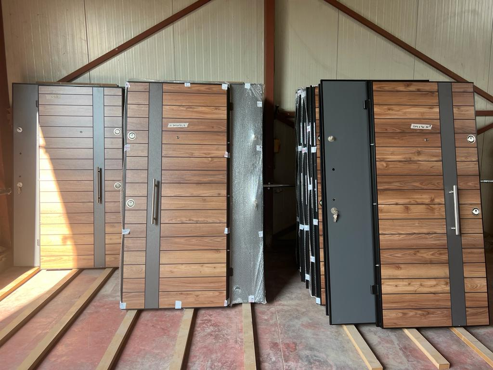

01 / Kombinat, Vore, Qyteti Studenti

Salillari
Ne partneritet me Salillari, FAL DOORS ka realizuar zgjidhje per dyer të jashtme dhe të brendshme në rezidenca, hapësira publike dhe ambiente biznesi. Fokusi ishte një standard i unifikuar: materiale cilësore, montim i pastër dhe detaje që i rezistojnë përdorimit të përditshëm.
- Prodhim dyersh me porosi
- Montim për ambiente rezidenciale dhe tregtare
- Koordinim materiali, ngjyrë dhe aksesorë